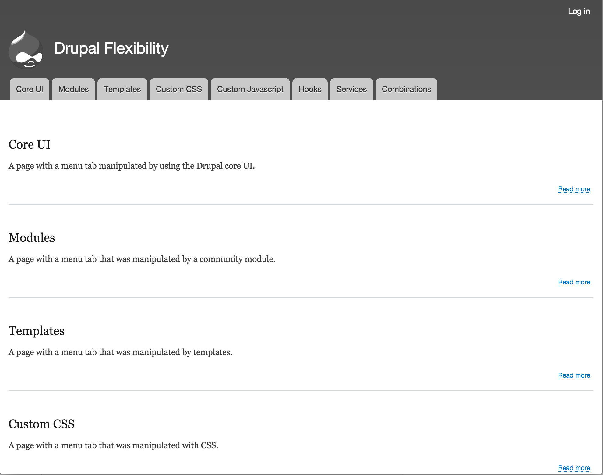

@BioRAFT_dev
@WeAreGenuine
Flexibility of Drupal /
Michael Miles
The Flexibility of Drupal
drupalnights.org/events/2015/michael-miles-flexibility-drupal
BioRAFT Drupal Nights
Michael Miles
From: Boston, MA USA
Work: Genuine @WeAreGenuine(.com)
Exp: Working with Drupal since 2008.
Acquia Grand Master. Acquia MVP.
Twitter: @mikemiles86
Drupal.org: mikemiles86
All the Places: mikemiles86
Focus of this Session
- 8 methods of manipulation
- Changing title, destination & display of menu tabs
- Non-developer, front-end, back-end skillsets
Session Environment
- A standard Drupal 8.0.1 install
- Bartik sub-theme with Slate color
- Not live. (blame Murphy)
Before
After
#1. Core Admin UI
- "Easy" to use
- No dev skills needed
- Capabilities are limited
Change data by clicking buttons.
#2. Modules
- Many options available
- Can build your own (dev skillsets)
- Require long term maintence.
Change data by extending Drupal core.
#3. Templates
- Almost everything is templated
- Change HTML/Twig code (dev skillsets)
- Requires a custom theme
Change data by controling rendered HTML.
sites\default\development.services.yml
# Local development services.
#
# To activate this feature, follow the instructions at the top of the
# 'example.settings.local.php' file, which sits next to this file.
parameters:
twig.config:
debug: true
<!-- THEME DEBUG -->
<!-- THEME HOOK: 'menu__main' -->
<!-- FILE NAME SUGGESTIONS:
* menu--main.html.twig
x menu.html.twig
-->
<!-- BEGIN OUTPUT from 'core/themes/classy/templates/navigation/menu.html.twig' -->
<ul class="clearfix menu">
<!-- // ... -->
<li class="menu-item menu-item--active-trail">
<a href="/node/3" data-drupal-link-system-path="node/3" class="is-active">Templates</a>
</li>
<!-- // ... -->
</ul>
<!-- END OUTPUT from 'core/themes/classy/templates/navigation/menu.html.twig' -->
core/themes/classy/templates/navigation/menu.html.twig
{% import _self as menus %}
{{ menus.menu_links(items, attributes, 0) }}
{% macro menu_links(items, attributes, menu_level) %}
{% import _self as menus %}
{% if items %}
{% if menu_level == 0 %}
<ul{{ attributes.addClass('menu') }}>
{% else %}
<ul class="menu">
{% endif %}
{% for item in items %}
{# ... #}
<li{{ item.attributes.addClass(classes) }}>
{{ link(item.title, item.url) }}
{% if item.below %}
{{ menus.menu_links(item.below, attributes, menu_level + 1) }}
{% endif %}
</li>
{% endfor %}
</ul>
{% endif %}
{% endmacro %}
themes/SubBartik/templates/menu--main.html.twig
{% macro menu_links(items, attributes, menu_level) %}
{# ... #}
{% for item in items %}
{# ... #}
<li{{ item.attributes.addClass(classes) }}>
{% if item.title == 'Templates' %}
<a href="node/9" style="color:#F00;background:#0F0">TEMPLATES ALT</a>
{% else %}
{{ link(item.title, item.url) }}
{% endif %}
{% if item.below %}
{{ menus.menu_links(item.below, attributes, menu_level + 1) }}
{% endif %}
</li>
{% endfor %}
{# ... #}
{% endmacro %}
themes/SubBartik/templates/menu--main.html.twig
{% macro menu_links(items, attributes, menu_level) %}
{# ... #}
{% for item in items %}
{% //... %}
<li{{ item.attributes.addClass(classes) }}>
{% if item.title|lower == 'templates'|t %}
{% set alt_url = url('entity.node.canonical', {'node' : '9'}) %}
{% set alt_title = (item.title ~ ' alt') | upper %}
<a href="{{ alt_url }}" style="color:#F00;background:#0F0;">{{ alt_title }}</a>
{% else %}
{{ link(item.title, item.url) }}
{% endif %}
{% if item.below %}
{{ menus.menu_links(item.below, attributes, menu_level + 1) }}
{% endif %}
</li>
{% endfor %}
{# ... #}
{% endmacro %}
#4. Custom CSS
- Control inclusion
- Target specific elements (dev skillsets)
- Requires custom theme or module
Change data by controlling display.
themes/SubBartik/subbartik.libraries.yml
menu-alter:
version: VERSION
css:
css/menu_alter.css: {}
themes/SubBartik/css/menu_alter.css
.menu--main .menu li a[data-drupal-link-system-path="node/4"] {
background: #0000FF;
}
themes/SubBartik/subbartik.info.yml
name: Sub Bartik
type: theme
base theme: bartik
description: 'A sub-theme of Bartik'
version: VERSION
core: 8.x
libraries:
- subbartik/menu-alter
themes/SubBartik/subbartik.libraries.yml
menu-alter:
version: VERSION
css:
css/menu_alter.css: {}
menu-alter-main:
version: VERSION
css:
css/menu_alter_main.css: {}
themes/SubBartik/css/menu_alter_main.css
.menu--main .menu li:nth-child(4) a {
color: #FFF;
}
themes/SubBartik/templates/menu--main.html.twig
{{ attach_library('subbartik/menu-alter-text') }}
{% import _self as menus %}
{{ menus.menu_links(items, attributes, 0) }}
{% macro menu_links(items, attributes, menu_level) %}
{% import _self as menus %}
{% if items %}
{% if menu_level == 0 %}
<ul{{ attributes.addClass('menu') }}>
{% else %}
<ul class="menu">
{% endif %}
{% for item in items %}
{# ... #}
#5. Custom JavaScript
- Control execution
- Change based on actions
- Dependent on client browser
Change data by manipulating DOM elements.
modules/drupalflex/drupalflex.libraries.yml
menu-alter:
css:
css/menu_alter.css: {}
js:
js/menu_alter.js: {}
dependencies:
- core/jquery
- core/jquery.once
- core/drupal
modules/drupalflex/js/menu_alter.js
(function ($, Drupal) {
"use strict";
Drupal.behaviors.drupalFlexMenuAlter = {
attach: function (context) {
$('.menu--main ul.menu li a').each(function(){
if ($(this).attr('href') == '/node/5') {
$(this).addClass('yellow-menu');
$(this).attr('style', 'color:#000;');
$(this).attr('target', '_blank');
$(this).attr('href', '/node/9');
$(this).text($(this).text() + Drupal.t(' Alt'));
}
});
}
}
})(jQuery, Drupal);
modules/drupalflex/css/menu_alter.css
.yellow-menu {
background-color: #FF0;
}
modules/drupalflex/drupalflex.module
<?php
/**
* Implements hook_page_attachments().
*/
function drupalflex_page_attachments(array &$attachments) {
$attachments['#attached']['library'][] = 'drupalflex/menu-alter';
}
#6. Hooks
- Provided by core and modules
- Requires custom theme or module
- Requires PHP skillset
Change data by interacting with core code.
<!-- THEME DEBUG -->
<!-- THEME HOOK: 'menu__main' -->
<!-- FILE NAME SUGGESTIONS:
* menu--main.html.twig
x menu.html.twig
-->
<!-- BEGIN OUTPUT from 'core/themes/classy/templates/navigation/menu.html.twig' -->
<ul class="clearfix menu">
<!-- // ... -->
<li class="menu-item menu-item--active-trail">
<a href="/node/6" data-drupal-link-system-path="node/6" class="is-active">Hooks</a>
</li>
<!-- // ... -->
</ul>
<!-- END OUTPUT from 'core/themes/classy/templates/navigation/menu.html.twig' -->
themes/SubBartik/subbartik.theme
/**
* Implements hook_preprocess_HOOK().
*/
function subbartik_preprocess_menu__main(&$variables) {
// Loop through all menu tabs.
foreach ($variables['items'] as &$menu_tab) {
// Current tab pointing to node/6 ?
if ($menu_tab['url']->toString() == '/node/6') {
// Change location.
$menu_tab['url']->setRouteParameter('node', '9');
// Existing attributes?
if (!$attributes = $menu_tab['url']->getOption('attributes')) {
$attributes = array('style' => '');
}
elseif (!isset($attributes['style'])) {
$attributes['style'] = '';
}
// Add custom styling.
$attributes['style'] .= 'color:#FFF;background:#00F;';
// Add back modified attributes.
$menu_tab['url']->setOption('attributes', $attributes);
}
}
}
modules/drupalflex/drupalflex.module
<?php
// ...
/**
* Implements hook_preprocess_HOOK().
*/
function drupalflex_preprocess_menu(&$variables) {
if ($variables['theme_hook_original'] == 'menu__main') {
foreach ($variables['items'] as &$menu_tab) {
if (strtolower($menu_tab['title']) == 'hooks') {
// Add 'Alt' to title.
$menu_tab['title'] .= ' Alt';
// Existing attributes?
if (!$attributes = $menu_tab['url']->getOption('attributes')) {
$attributes = array('target' => '_blank');
}
else {
$attributes['target'] .= '_blank';
}
// Add back modified attributes.
$menu_tab['url']->setOption('attributes', $attributes);
}
}
}
}
#7. Services
- Control global tasks
- Requires OOP skillset
- Requires a custom module
Change data by replacing core functionality.
modules/drupalflex/src/DrupalflexServiceProvider.php
namespace Drupal\drupalflex;
use Drupal\Core\DependencyInjection\ServiceProviderBase;
use Drupal\Core\DependencyInjection\ContainerBuilder;
class DrupalflexServiceProvider extends ServiceProviderBase {
/**
* {@inheritdoc}
*/
public function alter(ContainerBuilder $container) {
// Override menu_link_tree class with custom.
$definition = $container->getDefinition('menu.link_tree');
$definition->setClass('Drupal\drupalflex\DrupalflexMenuLinkTree');
}
}
modules/drupalflex/src/DrupalflexMenuLinkTree.php
namespace Drupal\drupalflex;
use Drupal\Core\Menu\MenuLinkTree;
class DrupalflexMenuLinkTree extends MenuLinkTree {
// Overrides \Drupal\Core\Menu\MenuLinkTree::build().
public function build(array $tree) {
$build = parent::build($tree);
if (isset($build['#items']) && $build['#theme'] == 'menu__main') {
foreach ($build['#items'] as &$item ) {
if ($item['url']->toString() == '/node/7') {
// Change Title.
$item['title'] .= ' Alt';
// Change Path.
$item['url']->setRouteParameter('node', '9');
// Add style attributes.
$item['url']->setOption('attributes', array(
'style' => 'color:#00F;background:#00CEFD;',
));
}
}
}
return $build;
}
}
#8. Combinations
- Most control over Drupal
- Requires multiple skillsets
- Real world scenario
Change data by using multiple methods.
modules/drupalflex/src/DrupalflexMenuLinkTree.php
//...
public function build(array $tree) {
$build = parent::build($tree);
if (isset($build['#items']) && $build['#theme'] == 'menu__main') {
foreach ($build['#items'] as &$item ) {
// ...
if ($item['url']->toString() == '/node/8') {
$item['title'] .=' Alt';
}
}
}
return $build;
}
themes/SubBartik/subbartik.theme
/**
* Implements hook_preprocess_HOOK().
*/
function subbartik_preprocess_menu__main(&$variables) {
// Loop through all menu tabs.
foreach ($variables['items'] as &$menu_tab) {
// ...
$menu_tab['is_combo'] = ($menu_tab['title'] == 'Combinations Alt');
}
}
themes/SubBartik/templates/menu--main.html.twig
<ul class="menu">
{# ... #}
{% for item in items %}
{# ... #}}
<li{{ item.attributes.addClass(classes) }}>
{% if item.title|lower == 'templates'|t %}
{# ... #}
{% else %}
{{ link(item.is_combo ? item.title| reverse : item.title, item.url) }}
{% endif %}
{# ... #}
</li>
{% endfor %}
</ul>
{# ... #}
themes/SubBartik/css/menu-alter.css
.menu--main .menu li a.combo {
color: #000;
font-weight: 800;
text-shadow: 0 0 #000 !important;
background: red; /* not working, let's see some red */
background: -moz-linear-gradient( top ,
rgba(255, 0, 0, 1) 0%,
rgba(255, 255, 0, 1) 15%,
rgba(0, 255, 0, 1) 30%,
rgba(0, 255, 255, 1) 50%,
rgba(0, 0, 255, 1) 65%,
rgba(255, 0, 255, 1) 80%,
rgba(255, 0, 0, 1) 100%);
background: -webkit-gradient(linear, left top, left bottom,
color-stop(0%, rgba(255, 0, 0, 1)),
color-stop(15%, rgba(255, 255, 0, 1)),
color-stop(30%, rgba(0, 255, 0, 1)),
color-stop(50%, rgba(0, 255, 255, 1)),
color-stop(65%, rgba(0, 0, 255, 1)),
color-stop(80%, rgba(255, 0, 255, 1)),
color-stop(100%, rgba(255, 0, 0, 1)));
}
modules/drupalflex/js/menu_later.js
(function ($, Drupal) {
"use strict";
Drupal.behaviors.drupalFlexMenuAlter = {
attach: function (context) {
$('.menu--main ul.menu li a').each(function(){
if ($(this).attr('href') == '/node/5') {
// ...
}
else if ($(this).attr('href') == '/node/8'){
$(this).addClass('combo');
}
});
}
}
})(jQuery, Drupal);
Considerations
- How quickly do changes have to occur?
- Where are changes needed?
- What skillsets are available?
Slides & Notes
Feedback
@mikemiles86
Thank You!
Questions?